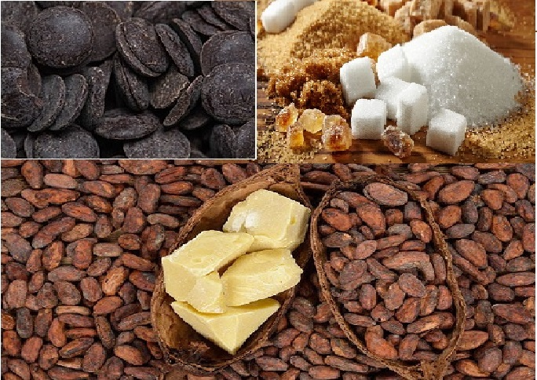
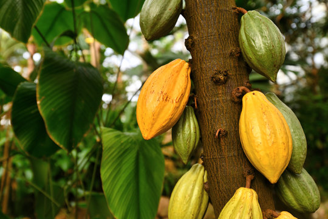
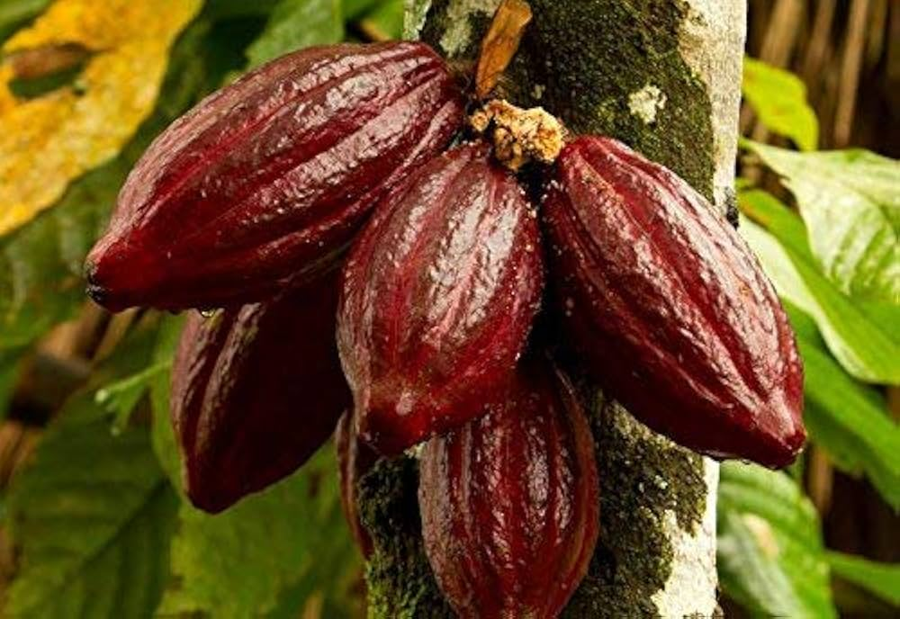
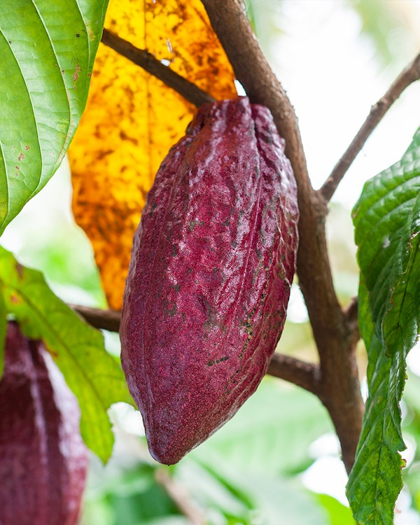

Composition
|
Dark chocolate is mainly made from chocolate liquor, cocoa butter, and sugar. Some manufacturers add small amounts of milk fat to delay chocolate bloom and slightly soften the texture, helping release more flavor. Emulsifiers like lecithin or PGPR are used to improve smoothness, and vanilla or vanillin may be added for flavor.
Many dark chocolate bars display a cocoa percentage, which refers to the combined amount of chocolate liquor and cocoa butter, with most of the remainder being sugar. However, since the label does not specify how much is liquor versus cocoa butter, chocolates with the same percentage can taste and feel very different. Higher cocoa content often means a stronger, more intense flavor, but the quality of the cocoa beans also plays a major role in the final taste. |
 |
Types of Cocoa Beans
- Forastero – It is the most widely grown cocoa bean in the world. It has a stronger, more bitter flavor and is commonly used in mass-produced chocolate. The trees are hardy and high-yielding, especially in West Africa.
- Criollo – These beans are rare and considered the highest quality. They have a smooth, complex flavor with low bitterness and fruity or nutty notes. However, the trees are delicate and produce lower yields, making them expensive.
- Trinitario – It is a hybrid of Criollo and Forastero beans. It combines the rich flavor of Criollo with the resilience of Forastero. Many premium chocolates use Trinitario for its balanced taste and better productivity.
|
 Forastero |
 Criollo |
 Trinitario |